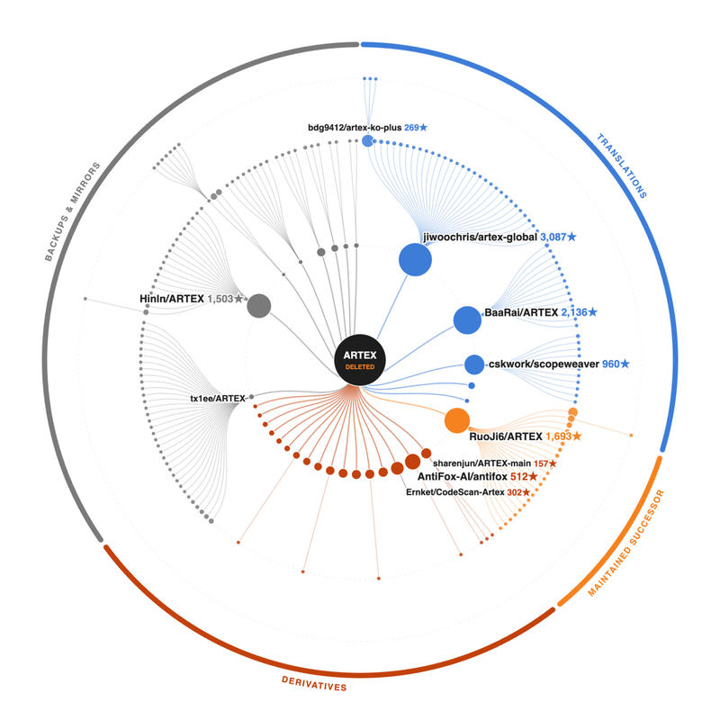
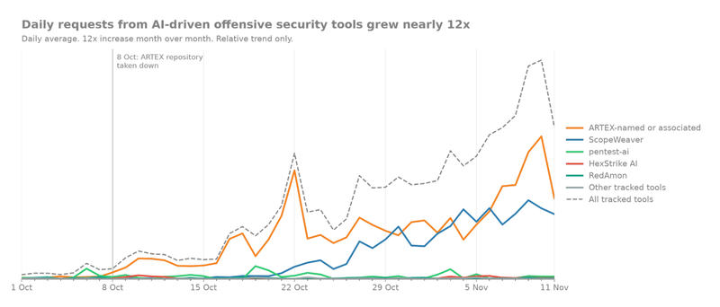

Feature 04 · ARTICLE · 2026 11
Adapting to AI penetration testing orchestrators: The Modern Security Model
Over the last month, LLM penetration testing frameworks have exploded. A few weeks ago ARTEX, an open source agentic pentesting system, was the only one available. In the last three days we have seen over 50 framework families attempt to scan Cloudflare customers globally, from thousands of IP addresses, a number that grows daily. Daily requests from these tools have grown 30x since October 1, and some have begun chaining stolen credentials to move laterally through an environment. Defenders are struggling to keep up. We expect these frameworks to keep proliferating, and we recommend every organization adopt what we call the Modern Security Model: fortify the front gate, staff the foyer, identify phony visitors, remove the back door, inspect deliveries, and join a neighborhood watch.

What these orchestrators are
They orchestrate AI agents through the stages of the Cyber Kill Chain at scale. They plug in existing MCP servers and connect standalone pentesting tools in new ways; some take operator direction. ARTEX and its forks map assets onto a graph, so many parallel agents can enumerate, verify, prototype, and attack at the speed of inference. They turn a compromise into a hill-climbable problem, which agents are specifically good at.
We track 50+ of them. The top five each have 1k+ GitHub stars and are fully autonomous, which is a doctrinal shift:
Human skill is no longer the limit. The harness runs the whole OODA loop: observe, orient, decide, act.
Speed. Parallel agents work toward one goal.
Scale. One operator can target several organizations at once.
Small mistakes get found. Exposed services and their configurations are tested relentlessly.
| Architecture | Post-exploitation | |
|---|---|---|
| ARTEX (and forks) | Planner and parallel agents | Nothing built-in; needs user instruction |
| LuaN1aoAgent | Supervisor, planner, generic executors | Built-in SSH and Chisel tunneling, reconnection after disruption |
| Decepticon | Orchestrator dispatching specialist sub-agents | Post-access, Active Directory, and cloud pivoting skills |
| Cairn | Dispatcher handing work to Codex, Claude Code, Pi | Prompt guidance and Kali tools |
| PentestGPT-Agent | Supervisor and one generic executor | Nothing built-in; needs user instruction |
What we see

ARTEX was taken down by its creator, Autumn-27, on October 8. Since then there are over 12,000 repositories, several hundred unique forks descended from the original, and hundreds of new, similar frameworks. As of November 12, ARTEX and its forks make up over 60% of known AI pentesting orchestrators. Traffic has grown more than tenfold since the takedown. The takedown, and the wide reporting of it, likely caused a hydra effect: the unique instances accelerate steeply around October 8.
Over the last eight weeks, Cloudforce One has been called into multiple incident responses involving ARTEX and its descendants. In several, an attacker gained access to a hyperscaler environment and pivoted straight into the customer’s Cloudflare environment. The root cause was the same each time: static, non-expiring tokens in CI/CD pipelines with broad, cross-environment access. LLM frameworks greatly expand the likelihood of one API key being used to take over other tenant environments.
In one case, ARTEX got hold of an account-level API token, previously used for CI/CD, with no IP restrictions or rate limiting; the compromise most likely came through a third-party hyperscaler. It created many Worker scripts named artex-*, artex-pgrecon-*, artex-pgw-*, and artex-do-*, each name matching a distinct behavior. We saw more than 69 requests per minute across their infrastructure, 400 database dump requests in an hour, attempted persistence, and attempts to validate session tokens for other third-party applications. We believe much of this was lightly guided by a human operator. It is one example of the speed and breadth these frameworks reach after a compromise.
The Modern Security Model
LLMs give an attacker speed and validation: each step of the Kill Chain is checked and fed into the next. That level of orchestration effectively vaporizes legacy security models. Picture the target as a house on an estate.
Fortify the front gate
Without a gate, an adversary drives an endless fleet of decoy trucks into the driveway (Layer 3/4 volumetric floods and direct IP probing). With one, traffic passes through distributed outer gates miles from the house, and only legitimate foot traffic reaches the door. Network traffic control stops volumetric attacks.
A security station in the foyer
Automated prowlers disguise themselves and try odd ways in, such as paths like //front-door//back-room/. The guard’s rules: you can’t knock 500 times in five seconds; you can’t disguise your path; you can’t wheel out the house’s blueprints (diagnostic heap dumps). Use security keys and hardware FIDO keys. A WAF with rate limits and anomaly detection stops application exploitation.
Identify phony visitors
Agents, headless scrapers, and AI recon tools don’t act like people. Their cadence is mechanical and their badge is a sloppy forgery. Bot Defense and challenges flag the unnatural behavior and escort the machines out before they touch a doorknob.
Remove the back door
Admin panels, /actuator endpoints, and remote gateways are the cellar hatch. Even locked, a prowler can stand on the sidewalk and pick at them. Zero Trust application access bricks up the doorway from outside: there is no lock, no handle, no light. The only way in is with an escort who checks your badge and your device’s health and takes you to the one room you need. Inside, micro-segmentation stops compromised credentials from crossing between production, test, and development.
Inspect deliveries
API traffic is the daily deliveries. Every request gets OpenAPI schema validation; couriers present mTLS certificates; anything that fails is rejected at the boundary; and every ruleset ends with an explicit deny-all.
Neighborhood watch
An estate is exposed when a syndicate invents a new technique across town. Threat intelligence warns you early, so you update watchlists and shut the gate before the actor turns onto your street.
Where this leaves defenders
Even classic defense in depth, built around a network DMZ, falls short in today’s architectures, and tomorrow’s attacks will only advance as orchestration becomes normal. Legacy and on-premises devices need identity gating that makes them unreachable from the Internet. Micro-segmentation slows lateral movement or makes it noisier. This is containment first, which is essential when users keep losing their keys.
If you face an active incident, Cloudforce One can respond on the ground; our Solutions Engineering team can help you implement the model.